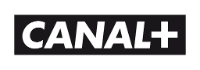
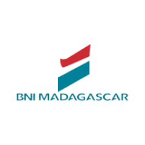
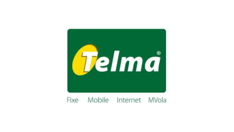
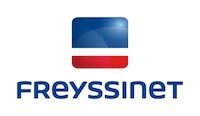
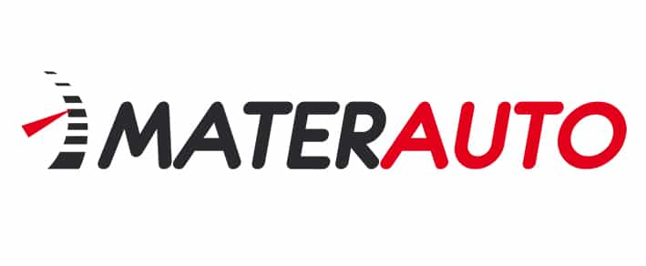
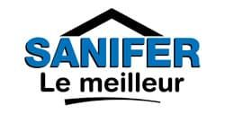
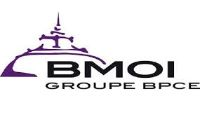

d'expérience consolidée depuis 2008 dans le recrutement et l'accompagnement RH.
Cabinet RH & plateforme emploi
Le partenaire RH qui accélère vos recrutements et vos carrières
Madajob connecte les entreprises, les talents et les équipes RH autour d'une offre complète de recrutement, de formation et d'externalisation pour répondre plus vite aux besoins du marché.
- Recrutement au succès
- Formation blended learning
- Externalisation & RPO
- Portail carrière & appli mobile
Tableau de bord Madajob
Un écosystème RH structuré pour transformer un besoin en short-list qualifiée, une candidature en opportunité concrète et une mission en résultat durable.
40 000+
CV et candidatures qualifiées dans la base
454
missions de recrutement prises en charge
856
agents gérés en externalisation
25+
modules de formation sur 5 axes
Temps forts du dispositif
274 offres actives
3 agences
Jobmada
Smart Interview
Portail mobile
Activation rapide 24h
offres mises en avant pour alimenter un tunnel candidat plus vivant et plus crédible.
axes de formation pour accompagner managers, commerciaux, équipes terrain et fonctions support.
agences pour rester proche du terrain tout en industrialisant l'expérience client.
Références clients
Des marques majeures nous font déjà confiance
Madajob accompagne déjà des entreprises de référence dans leurs enjeux de recrutement, de formation, d'externalisation et de performance RH.
Partenaire RH de confiance pour les acteurs de référence à Madagascar
Recrutement, externalisation, formation et accompagnement RH pour des groupes nationaux et internationaux qui recherchent réactivité, fiabilité et qualité de service.







Ecosystème
Une offre RH complète pour entreprises et talents
Madajob réunit dans un même écosystème les services essentiels pour recruter, former, externaliser et accompagner les parcours professionnels avec plus d'efficacité.
01
Recrutement
Une promesse claire, des missions au succès et une base de profils plus visible pour les décideurs.
- Sourcing ciblé
- Short-list et entretiens
- Garantie sur période d'essai
02
Formation
Des programmes conçus pour renforcer les compétences, accompagner la montée en responsabilité et soutenir la performance des équipes.
- 25+ modules
- 5 axes de montée en compétence
- Suivi mobile des plannings
03
Externalisation
Une lecture simple des offres de mise à disposition, paie, portage salarial et RPO international.
- 856 agents gérés
- SIRH et reporting
- Activation rapide
04
Expérience candidat
Un parcours simple pour rechercher un emploi, postuler, se former et rester connecté aux meilleures opportunités.
- Job portal Jobmada
- iOS & Android
- Prime de cooptation
Pourquoi les entreprises et les talents choisissent Madajob
Madajob s'appuie sur une méthodologie claire, une vraie connaissance du terrain et une offre complète pour répondre à chaque besoin RH avec précision.
- Des parcours dédiés pour les entreprises, les candidats, la formation et l'externalisation.
- Un vivier de profils qualifiés, une expérience éprouvée et des références fortes sur le marché malgache.
- Des solutions activables rapidement selon l'urgence, le volume et la complexité du besoin.
- Un accompagnement de proximité pour sécuriser chaque étape, du brief à l'intégration.
Madajob a vocation à simplifier le recrutement, à rendre les meilleures opportunités plus accessibles et à devenir la plateforme de référence entre entreprises et talents à Madagascar.
Réactivité
Expertise terrain
Solutions sur mesure
Accompagnement durable
Méthode
Une méthode claire pour sécuriser chaque mission
De l'expression du besoin jusqu'à l'intégration, Madajob mobilise un process structuré pour fiabiliser les recrutements, réduire les délais et améliorer la qualité des résultats.
Cadrer
Clarifier le besoin, le niveau d'urgence, le type de contrat et les compétences critiques à recruter ou à déléguer.
Sourcer
Mobiliser la base de 40 000+ profils, les campagnes digitales, le portail carrière et la cooptation pour accélérer la recherche.
Evaluer
Conduire des entretiens plus fluides, utiliser le Smart Interview et fiabiliser la short-list avant présentation.
Activer
Finaliser l'intégration, la gestion administrative, la formation ou l'externalisation selon le scénario choisi par le client.
Un parcours candidat simple, rapide et accessible
Les candidats trouvent rapidement les offres, postulent en ligne, accèdent à l'application mobile et restent connectés aux opportunités qui correspondent à leur profil.
- Accès direct aux offres via la page carrière et le Job Portal.
- Application mobile compatible Android et iOS pour rechercher et postuler en mobilité.
- Programme de cooptation avec prime de 100 000 Ar si la recommandation est retenue.
Une offre claire pour les recruteurs et les décideurs
Les entreprises identifient immédiatement les solutions disponibles, les preuves de capacité et les leviers à activer pour accélérer leurs recrutements et renforcer leur organisation.
- Promesse commerciale lisible et rassurante dès le premier écran.
- Meilleure articulation entre recrutement, paie, mise à disposition et RPO.
- CTA directs pour parler à un consultant et lancer une mission plus rapidement.
Preuves sociales
Des témoignages qui humanisent la marque
Les retours d'expérience soulignent la qualité de l'accompagnement, la réactivité des équipes et la proximité qui font la différence dans chaque mission.
Une prise en charge sérieuse, avec une vraie énergie positive pendant les entretiens et le suivi.
Angela Rak Assistante de directionUn accompagnement apprécié pour son dévouement, sa courtoisie et sa qualité de relation pendant les missions.
Narindra Rabe FreelanceUn process rapide et rassurant, avec un entretien obtenu dès le lendemain de l'inscription sur la plateforme.
Rivo Andria Gestionnaire performanceUne sensation de sérieux commercial et de proximité qui crédibilise la marque auprès des talents et des clients.
Tahiry Ratovohery Responsable performanceParlons de vos recrutements, de vos formations et de vos besoins RH
Besoin de recruter, de renforcer les compétences de vos équipes ou d'externaliser une partie de votre activité RH ? Madajob vous accompagne avec des solutions concrètes et opérationnelles.
- Adresse Lot VK 04 Morarano Fenomanana, Antananarivo
- Téléphone +261 34 11 801 19
- Email infos@madajob.mg
- Horaires Lun - Sam · 08:00 - 18:00